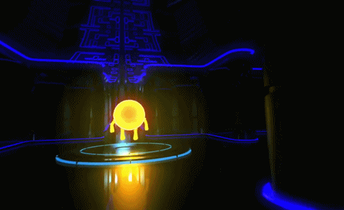
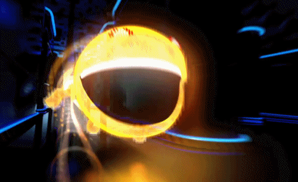

PacMan
Pac-Man är ursprungligen ett arkadspel skapat av Namcos programmerare Toru Iwatani 1980.
Det är ett av världens mest berömda datorspel, och har kallats ett av de första i survival horror-genren.
Pac-Man introducerades först i Japan den 22 maj 1980. Spelet blev genast en stor succé och togs snabbt upp av tillverkare i USA.
Spelet blev snabbt ett fenomen inom spelindustrin. Spelet klassades inte som våldsamt, och ansågs passa pojkar och flickor lika bra.
Den 21 maj 2010 var det 30-årsjubileum för Pac-Man och Google firade det med att byta ut logotypen på startsidan mot ett Pac-Manspel, som faktiskt gick att spela.


